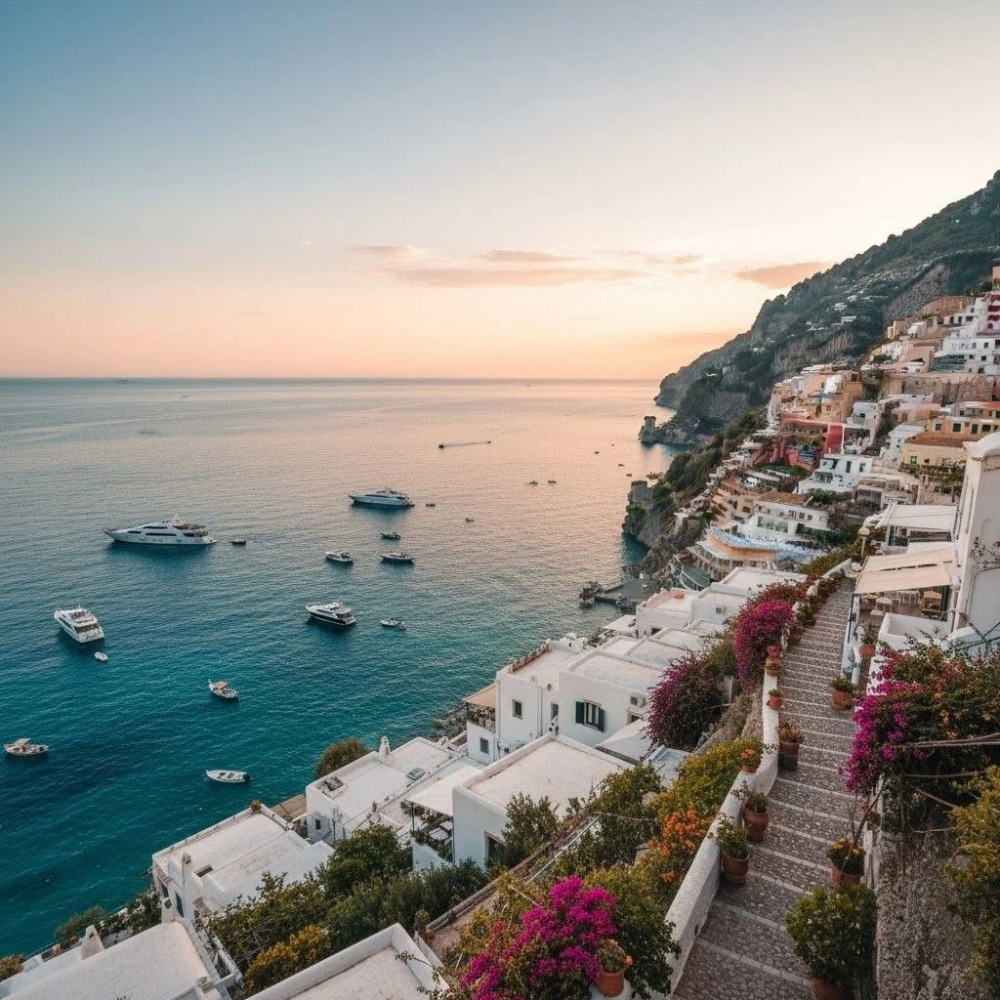
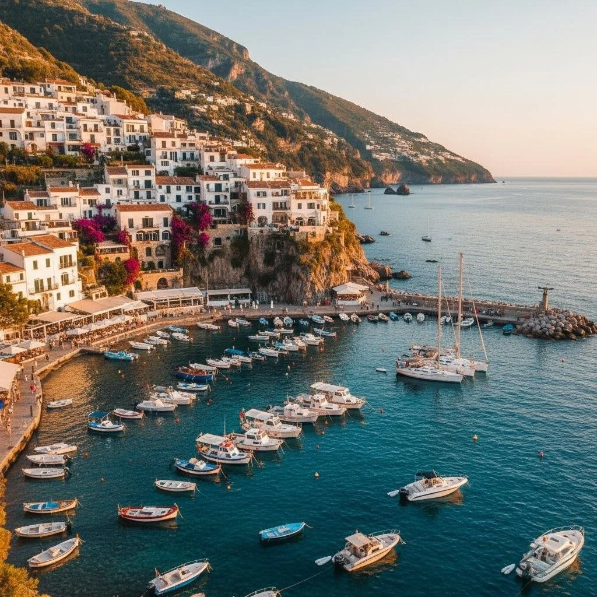
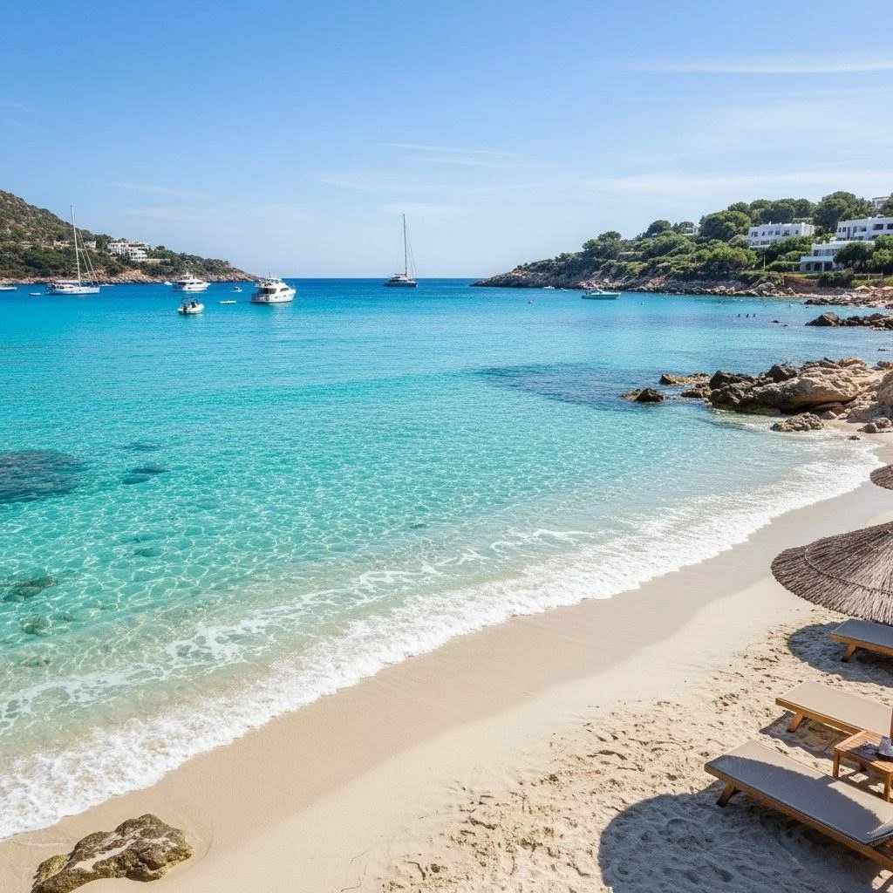
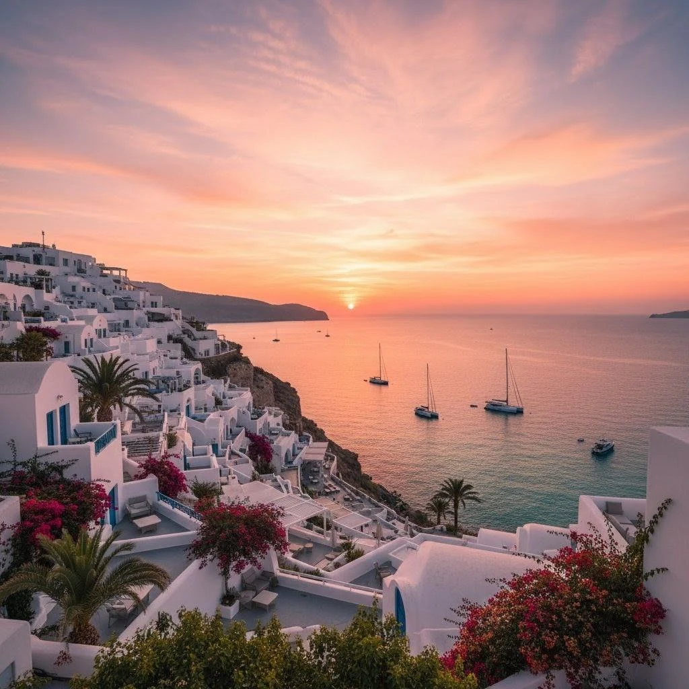

Mediterráneo Escape — 8 días
Playas, pueblos costeros y gastronomía mediterránea: una ruta pensada para desconectar y disfrutar del mar.

Resumen del viaje
Recorrido por ciudades costeras, visitas a calas y pequeños puertos, con noches en alojamientos con encanto.
Itinerario día a día
- Día 1: Vuelo y llegada al punto base (ej. Barcelona o Nápoles).
- Día 2: Playa y pueblos locales.
- Día 3: Pueblos costeros y mercados.
- Día 4: Excursión en barco a calas escondidas.
- Día 5: Día libre y experiencia gastronómica.
- Día 6: Visita cultural (museos/monumentos).
- Día 7: Relax y actividades opcionales.
- Día 8: Regreso y despedida.
Incluye
- Alojamiento según paquete
- Traslados locales
- Excursión en barco (según paquete)
Precio referencial: desde USD 1,250 (sujeto a temporada)
Solicitar cotizaciónGalería


